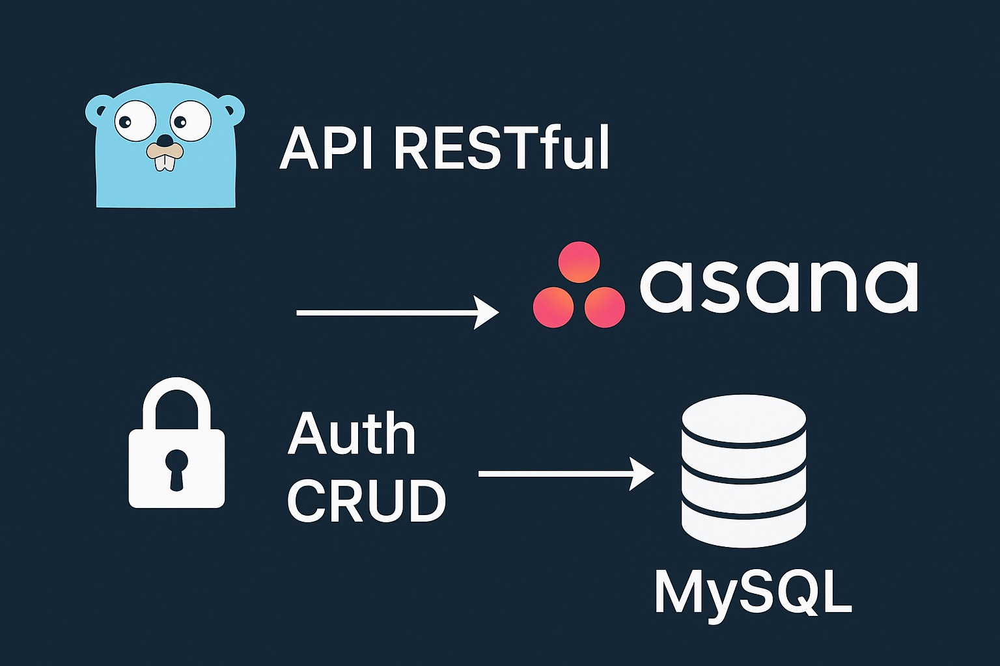
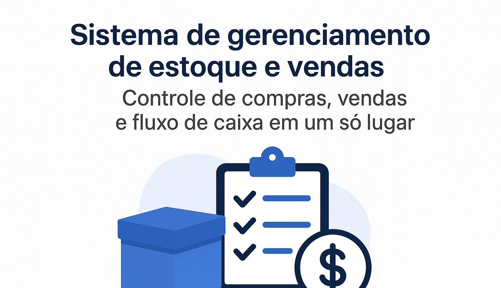

<link rel="stylesheet" href="../css/section-member.css">

<section id="section-kevyn" class="member-section">
    <div class="member-container">
        <div class="member-header">
            
            <div class="member-name-role">
                <h3 class="member-name">Kevyn Lohan</h3>
                <p class="member-role">Back End Developer</p>
            </div>
        </div>

        <section class="member-about">
            <h4>About</h4>
            <p>
                I'm Kevyn Lohan, a backend developer. I currently work at FDS Games, where I develop internal systems using Go (Golang), with experience in Java and Python. I'm familiar with development support tools such as Git and Postman, as well as best practices in the versioning and integration cycle.
                I'm currently pursuing a degree in Information Systems (2024), focusing on backend software engineering and development. I have an analytical personality, a disciplined approach to continuous learning, and an entrepreneurial mindset, always striving to create scalable and impactful solutions.
                My main goals are to develop as a backend developer, participate in challenging large-scale projects, and consolidate my career in technology.
            </p>
        </section>

        <section class="member-tech">
            <h4>Technologies</h4>
            <ul class="tech-list">
                <li>Go</li>
                <li>Gin</li>
                <li>Java</li>
                <li>Spring Boot</li>
                <li>JavaScript</li>
                <li>Git</li>
                <li>JWT</li>
                <li>Pyhton</li>
                <li>SQL</li>
                <li>Postman</li>
                <li>Scrum</li>
                <li>Kanban</li>
            </ul>
        </section>

        <section class="member-projects">
            <h4>Projects</h4>
            <div class="projects-grid">
                <a class="project-card" href="https://github.com/kevynlohan05/meu-primeiro-crud-go" target="_blank" rel="noopener">
                    <div class="project-thumb">
                        
                    </div>
                    <div class="project-body">
                        <h5 class="project-title">Api Crud Go</h5>
                        <p class="project-desc">I developed a RESTful API in Go (Golang) integrated with Asana for ticket management, with user authentication, complete CRUD, and MySQL persistence, ensuring efficient control and direct integration with the platform.</p>
                        <ul class="project-tech">
                            <li>Go</li>
                            <li>Swagger</li>
                            <li>JWT</li>
                            <li>MySQL</li>
                        </ul>
                    </div>
                </a>

                <a class="project-card" href="https://github.com/kevynlohan05/StockPro" target="_blank" rel="noopener">
                    <div class="project-thumb">
                        
                    </div>
                    <div class="project-body">
                        <h5 class="project-title">StockPro</h5>
                        <p class="project-desc">Project developed in Go for inventory and sales management. It uses MySQL for data persistence, implements full CRUD operations, and JWT authentication for security, offering a robust and scalable solution.</p>
                        <ul class="project-tech">
                            <li>Go</li>
                            <li>Swagger</li>
                            <li>JWT</li>
                            <li>MySQL</li>
                        </ul>
                    </div>
                </a>

            
            </div>
        </section>

        <section class="member-contacts">
            <h4>Contacts</h4>
            <div class="contacts-list">
                <a class="contact" href="mailto:kevynlohan05@gmail.com">Email</a>
                <a class="contact" href="https://github.com/kevynlohan05" target="_blank" rel="noopener">GitHub</a>
                <a class="contact" href="https://www.linkedin.com/in/kevyn-lohan-572069342/" target="_blank" rel="noopener">LinkedIn</a>
                <a class="contact" href="https://api.whatsapp.com/send/?phone=83986019435&text&type=phone_number&app_absent=0" target="_blank" rel="noopener">WhatsApp</a>
            </div>
        </section>
    </div>
</section>